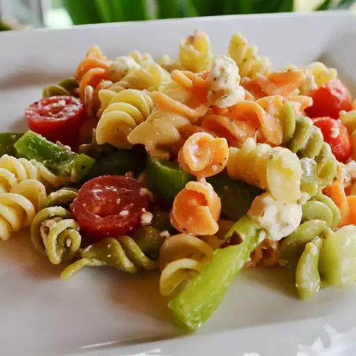

greek pasta salad

This is a great make-ahead pasta salad loaded with the flavors of Greece!
Ingredients
- ½ cup olive oil
- ½ cup red wine vinegar
- 1 ½ teaspoons garlic powder
- 1 ½ teaspoons dried basil
- 1 ½ teaspoons dried oregano
- ¾ teaspoon ground black pepper
- ¾ teaspoon white sugar
- 2 ½ cups cooked elbow macaroni
- 3 cups fresh sliced mushrooms
- 15 cherry tomatoes, halved
- 1 cup sliced red bell peppers
- ¾ cup crumbled feta cheese
- ½ cup chopped green onions
- 1 (4 ounce) can whole black olives
- ¾ cup sliced pepperoni sausage, cut into strips (Optional)
steps
- Whisk olive oil, vinegar, garlic powder, basil, oregano, black pepper, and sugar together in a large bowl; add cooked pasta, mushrooms, tomatoes, red peppers, feta cheese, green onions, olives, and pepperoni. Toss until evenly coated. Cover, and chill 2 hours or overnight.